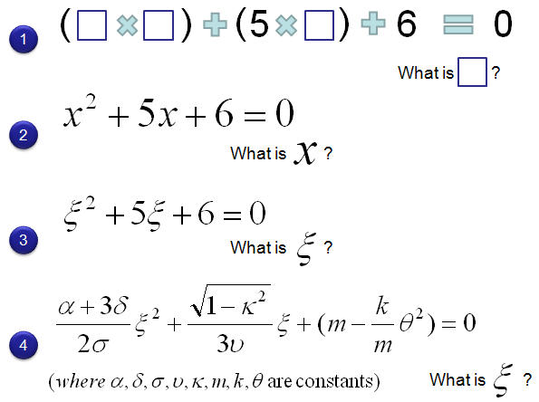
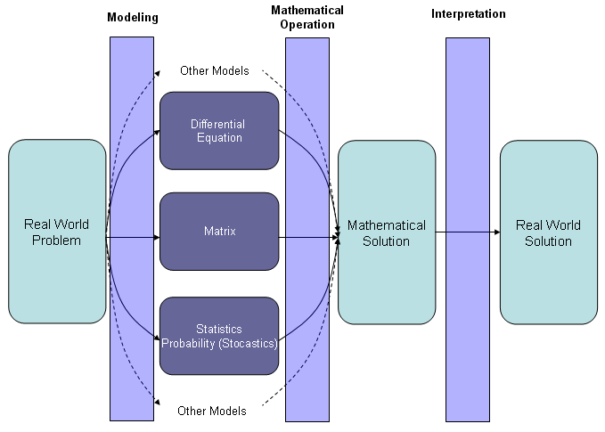

|
Engineering Math - Introduction Home : www.sharetechnote.com |
|
For sure we need various type of maths in any area of engineering. Almost all of the readers of this page has gone (or is going) through thick books with various dizzy/scary titles like Engineering Math, Linear Algebra, Differential Equation etc.
In my view, the best way to learn Math is to understand the fundamental nature of Mathematics. My (personal) understanding of mathematics are as follows.
i) Math is a kind of language. ii) The best way to learn any kind of language is "spit out anything in your own words" and "do it as frequently as possible". iii) Practice is more important than understanding/learning grammer. ('Feeling' is more important than 'rule'). iv) Rote memory of 100,000 separate words does not automatically make you a good speaker. v) If you don't feel any motivation (the reason why you want to learn), you would never learn it. vi) Don't be scared of making a mistake.
I think most of Math text book or most of Math text book teaches only individual words, grammers and does not tell us how to speak in Math and how to think in Math.
Never get disappointed if you don't understand stuffs in your class.
If you are interested and have time, try to read books/literature on history of mathematics. You would realize that none of the mathematical concept has been invented/developed/adopted in a single day or single night. Most of those concepts were developed at least several years of research and in many cases even the person who invented/development the concept had difficulties understanting the practical meaning of it.
Type 1 : Person who is quick to figure out the tricks to solve the problem and had good memory or refresh the memory often and get high marks at the test. It is OK.. even though you started out without understanding, through the repeating practice and excerse you would have some moment of enlightenment. Type 2 : Person who is quick enough to figure out the tricks to solve the problem and understand it during the class, but no further motivation to make enough practice unless he understand the real meaning of it. Even though this type of person make pretty much effort on studying the concept itself, you often fail to get high mark for the exam. Type 3 : Person who is not quick enough to figure out the tricks in such a short time of a class and do not do much practice either since simple practice would not motivated him unless he understand the real meaning, but has strong interest in those mathematical concept and carry on those interest for many years. Type 4 : Person who is not interested at all either in understanding the concept nor in getting good scores in the example.
Who do you think is the most appropriate person ? Nobody is wrong. Even type 4 person. We don't need every body being good at math. Those who are not good at math would be good at some other field for sure. Personally I am a Type 3 person. Very slow in catching a concept but carry on the interest for very long time. Unfortunately not so much luck in school exam for this kind person -:)
I haven't read any formal research result or I haven't done any formal research on this. This is purely based on my personal experience.
Whenever I start getting in a new engineering topics, I always begin with very basic, tutorial types of materials and try to get some kind of intuitive understanding. Thanks to internet and many good people who shares their knowledge with others, it has become much easier to get these materials these days.
But when you try to do any real development work or implement anything, you would realize that only the intuitive knowledge (big picture) is not enough. You need understandings on every bits and pieces. In many engineering, it would be difficult (sometimes almost impossible) to get such a detailed understandings without going through mathematical process underlying the area. This is a big hurdle to jump over but it always has been the highest wall standing in front of me. However if I look at these mathematical descriptions, it looks to me that each component (mathmatical symbols) and operators are not such a rocket-science. Most of those components seems to be what I have learned from high school math or even from elementary school class. Then why it is too hard for me to make any sense from the mathemtical components, each components of which I already learned and practiced so much.
Repeating this kind of experience over and over, I start realize that this is more about 'psychological' issues rather than mathmatical skills. Let me give you an example.
See the following four mathematical equation. Which one looks the most difficult to you ? Are they all so easy to you as the number 1 ? or Are they all difficult like number 4 ?
As you can see from my intention, mathmatically all of these equations represent the same thing and has same level of difficulties. But let's be frank. To me, definitely number 1 looks the easiest to me and it looks like elementary or early junior high problem. And then number 2 looks like an junior high level of problems. Number 3 looks like number 2, but strangely it looks more difficult to me comparing to number 2. and I was stunned with number 4 and tried to run away from it. My trial has always been like this. ...... Trying to attack the mathmatics in a field and get scared and run away.... keep repeating this kind of attack and runaway ... and finally I realize that the number 4 is basically same as number 1 and fully charged with confidence and finally reached the fundamental understanding of the area. Why do I keep repeating this kind of attack and runaway process in stead of conquering it at the first attack ? Is this really the issue of mathematical skills ? It may be... but I think it is more of psychological issue. It was because I was simply try to escape from those many unfamiliar symbols.

The point that I am getting at here are i) In many case, it is almost impossible to get the fundamental understanding of an engineering concept without conquering underlying mathematics. ii) Those underlying mathematics would come in very scary forms in many cases. iii) But it is only the outlook of the mathematical equations that scares you. It is because all those symbols written in very strange characters you never used or just too many characters. The concept would be as simple as the one you already learned from high school math. iv) Once you overcome this kind of psychological barrier, you could easily get the core of the field.
Then you may ask "How can I overcome this kind of psychological hurdle ?". I wish I can find a pill from a drug mart and get brave against all of this scary equations, but we don't have such a fortune yet. So somehow you have to learn how to get brave on your own. My method is like this i) Try to see the same equation or similar equation over and over. Don't try to understand from the beginning... just look through it. Sometimes reading many different books/materials dealing with the same topics would be more efficient than reading the same book/material over and over because our brain tend to get bored more easily with same/repeating stimulus. ii) Once you think you got a certain degree of familiarity, look into the equations more deeply and try to simplify it. One good way to simplify it would be to remove all the constant or replacing multiple constants with a single symbol. Then try to see if it became to similar to any mathematical pattern you already learned/are very familiar with.
What would be the best book or learning Material ?
I perceive Math as a kind of language as I mentioned above. I believe that the best way to learn a language is through speaking through your own mouth and writing with your own hands. Therefore, I think the best book is the one you wrote yourself in your own words. It would mean that you would not be able to get the best book from any book store. You can get it only by your own sweat.
Another set of materials that I want to recommend is to try to find materials or lectures provided by a person who has devoted large portions of their life for a small set of mathematical equation or think a lot on "What is the efficient way of conveying Mathematical concept". Several examples that I found is excellent material based purely on my own criteria are as follows. (I will keep extending this list as I find more). You would not see much of textbook like process of solving problems.. but I am pretty sure that you will have very good insight for the certain mathmatical concept. I am not saying this kind of material/lecture can replace your textbook and school class, but once you get this kind of insight for various mathematical concept, you will get 120% out of your math class.
What do I want to do on these posts ?
My goal on these post is to write my own math book in my own words. According to my definition of 'best book', this would be the best book only for myself since it will be written in MY words not in YOUR words, so it would not be the best book for you (readers), but I hope this can be a guide to show you how to write your own book. Or you can revise my book to make a book co-authored by me an you -:).
I am 100% sure that everybody reading this page might have asked to himself or even to his/her math teachers (How brave he is !-:). Or somebody would be asking this even now.
Your math teacher would say " Math is so tightly related to your life. You are going to be a total looser if you are not good at math". and you (a student) would say "Math seems to be the most useless things that I have ever learned. What does it have to do with my life ?".
I think the answer would be different depending on how you define your 'Life' ? but I am not going into this philospical question now -:). One thing I can say about the life as an engineer is "Math is not as your math teacher would say, but it is not as you would think either". Putting it simple way, Math cannot solve every problems in your engineering life completely, but it will be a REALLY big help for you to solve the problems. More practically speaking "it will spare you a lot of nights you would have to stay up if you don't know math." This is the simple conclusion that I got after spending around 20 years in various engineering area.
Nows let's look at more practical aspect of usage of mathematics in our engineering life. My personal understanding of solving an engineering problem is as follows.
Almost all of the engineering problem (many of the problems in pure science as well) come from a problem in real life. With long and careful observation, the engineers describe the real life problem into a mathematical form and this process is called Modeling. Once we got the mathematical description of the problem and then we do many mathematical operations and get the mathematical solution to the problem. But in many cases the purely mathematical solution would not give you any practical meaning. In this case, you would go to an interpretation process to draw out the practical meaning of the mathematical solution.

Do you think this diagram is also too much like a typical text book ? Are you saying "I've never been asked to follow this kind of process and I didn't even try it myself. I am just doing whatever was asked in my math course. or I am just doing whatever may company ask me to do." I fully undersand how you feel as a student and how you feel as new employee in a company, but I am pretty sure that you will get into a situation where you would have to think about this overall process unless you quit the job and change your career.
I think there is other issues that prevent you from looking at this kind of big picture especially when you are at school. It would be that most of math course is focused on "Mathematical Operation" process which is usually very boring or which can better be done by computer software.
In my pages, I would try to focus on Modeling and Interpretation as much as possible.. but the most important thing is your self-motivation. I hope these pages can be any help of improving your motivation.
|